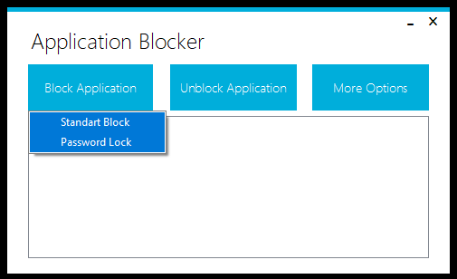
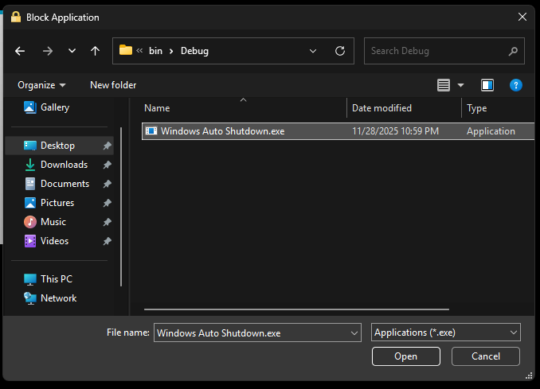
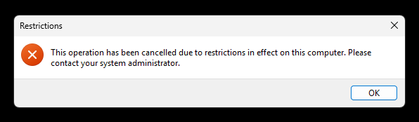
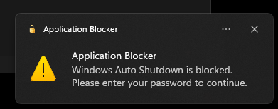
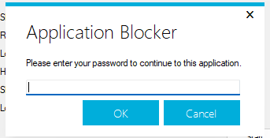

Blocking Applications

Standart Block: Block selected application completely until it gets unblocked.
Password Lock: Ask for Application Blocker password when the blocked app gets started.
When a program gets blocked using password lock, the Application Blocker will generate startup entries and will continue working at background when closed. This way, Application Blocker can continue blocking applications. Startup entries gets removed when the last password locked application gets unblocked.

To block an application, click "Block Application" button. Then, select "Standart Block" or "Password Lock". This will open a file browser. You can select the application (exe file) to block. After that, selected application will be added to list and access to it will be blocked.
Trying to run a blocked program
When you try to run a program that is blocked by standart block, you will see this message:

When you try to run a program that is blocked by password locking, you will see this message:


You need to enter your Application Blocker password to continue to the blocked program. Clicking "Cancel" will close the blocked program.